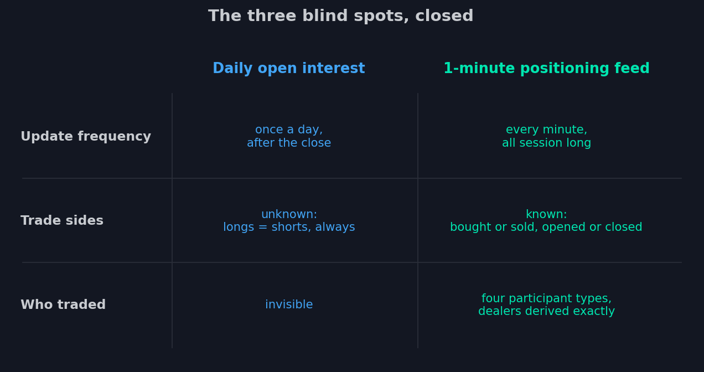

9. El feed por minutos: los datos que no existían
Al final de la lección 8 escribimos un pliego de condiciones en tres puntos:
frecuencia de minutos, lados de la operación conocidos, desglose por
participante. Ahora preguntemos: ¿quién podría siquiera recopilar datos así?
Solo hay una respuesta. Toda operación con opciones SPX pasa por un único punto —
la bolsa CBOE, donde se negocia este mercado. Solo la bolsa ve ambos lados de cada
operación, sabe de qué tipo de cuenta vino cada orden y si abre una posición o la
cierra. Los analistas pasaron años reconstruyendo este cuadro con pruebas
indirectas — la bolsa simplemente lo tiene, completo. Sobre esos datos de bolsa se
levanta un feed de posicionamiento minuto a minuto para las opciones SPX,
desglosado por tipo de participante y lado de la operación; lo recibimos a través
de un proveedor de datos licenciado, y en el resto del curso lo llamaremos
simplemente el feed por minutos. Este feed es el cimiento de cada indicador que
discutiremos hasta el final del curso.

Qué hay dentro de un minuto
El feed está construido de forma simple — y esa simplicidad es su fuerza. Cada
minuto, para cada strike y cada serie, informa cuántos contratos se compraron y
vendieron, abriendo y cerrando posiciones, por participantes de cada uno de los
cuatro tipos:
Retail — clientes minoristas: cuentas individuales, aquellos compradores de
boletos de lotería y seguros de un día.
Pros — clientes profesionales: traders activos y fondos pequeños que operan lo
bastante como para que la bolsa deje de contarlos como minoristas. El retail y los
pros acaban regularmente en lados opuestos — observaremos su tira y afloja en los
indicadores.
Firms — los libros propios de las casas de bolsa y las instituciones que
enrutan a través de ellas.
Brokers — broker-dealers que ejecutan flujo de clientes.
Suma las compras y ventas minuto a minuto y la bolsa obtiene la posición neta
de cada cohorte en cada strike — no una conjetura, sino un hecho contable: tanto
comprado, tanto vendido, este es el saldo.
Una advertencia sobre las unidades, ya mismo, porque moldea todo lo que sigue. Los
datos no exponen los recuentos brutos de contratos — de la bolsa solo sale riesgo
derivado. Las posiciones llegan a los indicadores ya convertidas en exposición
delta en equivalente ES — riesgo en vez de unidades — y eso no es una pérdida
sino una ganancia: las unidades son incomparables entre strikes; el riesgo es
comparable. Desempaquetaremos esta unidad en detalle en la próxima lección.
El quinto participante
El lector atento notará: los market makers no están en la lista. No hace falta — y
esta es la parte más bella de toda la construcción. Recuerda la lección 4: el MM
está al otro lado de casi toda operación de cliente. Si las cuatro cohortes de
clientes compraron juntas mil contratos en un strike, alguien vendió esos mil. La
posición del MM es la suma de las posiciones de los clientes con el signo
invertido — en cada strike, cada minuto.
Hagamos una pausa para apreciar qué significa esto para nuestra historia. En la
lección 5, toda la analítica GEX descansaba en el supuesto «supongamos que los
clientes se comportaron de forma típica» — esa misma holgura que te pedimos
recordar. El feed por minutos elimina el supuesto por completo: el libro del MM no
se adivina por costumbres — se calcula a partir de lados de operación
conocidos. Ese mismo libro que «nadie publica» se ha vuelto observable. Minuto a
minuto.
De posiciones a fuerzas: cuatro exposiciones
A partir de aquí arranca la tubería que montamos en la primera parte del curso.
Conoce el libro y conocerás sus griegas. Multiplica las posiciones del MM por las
griegas de cada opción y suma por strikes — y obtienes cuatro mapas de fuerzas del
MM, minuto a minuto:
GEX (gamma exposure) — el mapa de gamma conocido de la lección 5: dónde la
cobertura frena el precio, dónde lo acelera. Solo que ahora no es una estimación
diaria sino un hecho minuto a minuto.
DEX (delta exposure) — el mapa de delta: cuánto equivalente de futuros
mantienen los MM contra cada strike.
VEX (vanna exposure) — el mapa de vanna: cómo reaccionará el libro del MM a un
desplazamiento de la volatilidad. Aquella vanna presentada por su nombre en la
lección 3 — su hora en escena se acerca.
CEX (charm exposure) — el mapa de charm: qué flujo generará el mero paso del
tiempo.
GEX y DEX ya puedes leerlos; a vanna y charm los tomaremos en serio en la lección
11 — primero mostremos lo más simple en los gráficos.
Lo que el feed no ve
En la tradición de este curso — un párrafo honesto sobre los límites, antes de
permitirnos admirar.
Posiciones, no la cinta. El feed muestra el cambio de posiciones en un
minuto, no cada operación. Una posición abierta y cerrada dentro del mismo minuto
se desvanece sin dejar rastro — así que cualquier actividad calculada del feed
(repositioned en los indicadores de flujo, lección 10) es una cota inferior de lo
real: todo lo que vemos ocurrió con certeza, pero algo más ocurrió encima.
Hechos, no intenciones. Sabemos que el retail compró mil puts en un strike. No
sabemos por qué: seguro, apuesta o una pata de una estructura compleja. Los datos
muestran posiciones — la interpretación sigue siendo trabajo del analista.
SPX, no todo lo habido y por haber. No existen datos así para el petróleo, el
oro o las acciones individuales — y no solo porque la bolsa no los venda. Una
profundidad como esta tiene sentido donde la cola de las opciones mueve de verdad
al perro, y eso es el complejo del índice, con sus billones de nominal y la mitad
de su volumen en 0DTE. Por qué una señal de las opciones SPX puede leerse
legítimamente en el gráfico del futuro ES lo cubrimos ya en la lección 2 — el
encadenamiento por arbitraje del complejo; diremos más sobre los límites de
aplicación en la lección 15.
Así que aquí está el juego completo de insumos: posiciones minuto a minuto de
cuatro cohortes de clientes, el libro del MM derivado de ellas y cuatro mapas de
fuerzas encima. Empecemos a desempaquetar estas riquezas con la pregunta más
simple con la que empieza cualquier mercado: ¿quién opera y cuánto? Incluso esa
pregunta — ya verás — suena completamente distinta con los datos nuevos.
- Solo la bolsa ve ambos lados de cada operación, el tipo de cuenta y la marca de apertura/cierre — el feed de posicionamiento por minutos se construye sobre esos datos.
- El feed entrega posiciones minuto a minuto de cuatro cohortes: Retail, Pros, Firms, Brokers; los MM se derivan como su suma con el signo invertido.
- Las posiciones llegan a los indicadores no como unidades de contratos sino como exposición delta en equivalente ES — el riesgo que los MM tendrán que cubrir.
- El libro del MM pasó de hipótesis a hecho calculable — minuto a minuto; sobre él calculamos los mapas GEX, DEX, VEX y CEX.
- Los límites son honestos: el feed ve cambios de posiciones una vez por minuto (la actividad es una cota inferior), muestra hechos y no intenciones, y existe solo para SPX.